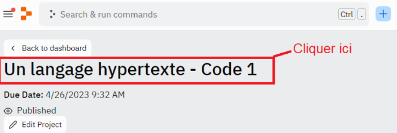

Durée : 1 heure
Prérequis : maîtrise des concepts fondamentaux de JS et de POO
Environnement de travail : Replit
Vous connaissez les principes fondamentaux de la programmation en JavaScript. Le concept de programmation orientée objet vous est par ailleurs bien moins étranger. JavaScript permet d’ajouter de l’interactivité et du dynamisme à un site internet. C’est aussi une technologie qui apporte des fonctionnalités efficaces de traitement des données.
Comme vous le savez, le Document Object Model permet d’accéder aux différents éléments du document HTML. Il représente donc une parcelle entre les scripts et les pages du site, en prenant une forme orientée objet.
Dans ce cours nous parlerons d’un point fondamental : JS Browser BOM (pour Browser Object Model). JS Browser BOM est une collection d’objets JavaScript fournis par les navigateurs web. Les objets fournis permettent aux développeurs de manipuler et de contrôler les fenêtres du navigateur, les écrans, les adresses URL et les historiques de navigation des utilisateurs. Dans ce cours, nous parlerons de plusieurs objets de JS Browser BOM.
Nous verrons des exemples concrets d’utilisation, avec des scripts JS que vous pourrez tester via votre interface Replit. Si vous rencontrez des bugs, étant donné que nous allons travailler sur la gestion de fenêtres, n’hésitez pas à créer un projet sur un IDE comme Visual Studio Code. Ce cours sera composé par ailleurs d’exercices de code ainsi que de vidéos d’explication. Pensez aussi à consulter la documentation Mozilla dédiée aux points abordés.
Pour avoir accès au code et à l'IDE intégré de cette leçon, vous devez :
Une fois ces étapes effectuées, nous vous conseillons de rafraîchir votre navigateur si le code ne s'affiche pas.
En cas de problème, redémarrez votre navigateur et vérifiez que vous avez bien accepté les cookies de connexion nécessaires avant de recommencer la procédure.
Pour accéder au code dans votre cours, cliquez sur le nom du lien Replit dans la fenêtre. Par exemple :
